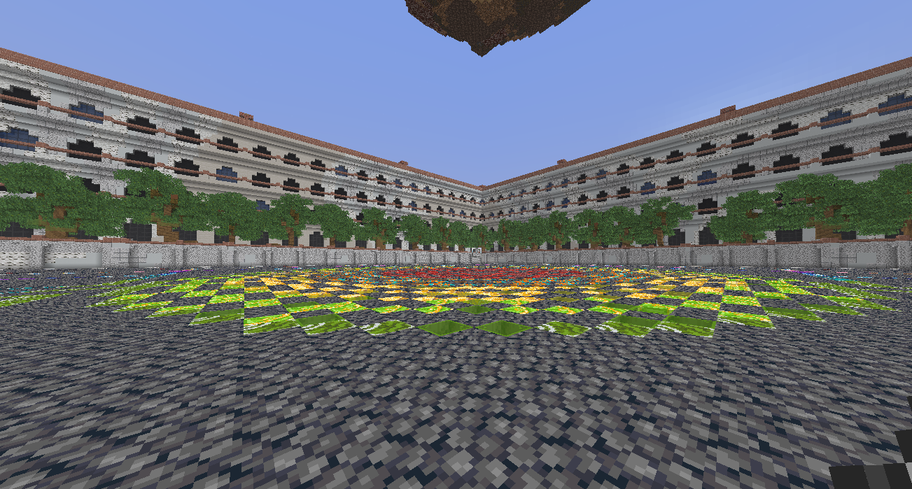
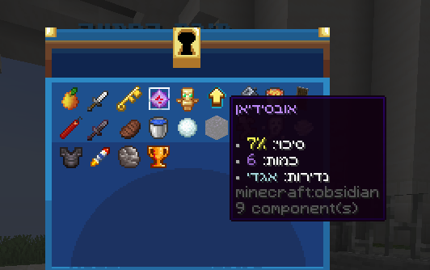

AIGuard Plugin
About AIGuard
AIGuard is an advanced Minecraft plugin (Spigot / Paper 1.20+) that monitors chat messages in real time and detects the use of inappropriate or banned words using Fuzzy Matching algorithms. Instead of relying on exact word matching, the plugin is capable of identifying bypass attempts such as spacing, character substitutions, distorted spelling, or fragmented words. The system is designed to assist staff members rather than replace human judgment, providing clear and detailed alerts for moderation purposes.
Core Features
Advanced Detection
- Uses Levenshtein Distance and Cosine Similarity to detect variations.
- Configurable sensitivity level via a similarity threshold.
- Detects disguised or indirect word usage.
Performance
- Asynchronous processing ensures chat messages are not blocked.
- Lightweight and optimized for high-traffic servers.
- Efficient memory and runtime management.
Server Network Support (BungeeCord)
- Sends alerts across all servers in a network.
- Clearly identifies the server where the message originated.
- Uses Plugin Messaging for fast cross-server communication.
Commands & Permissions
Commands
/aiguard reload # Reloads configuration
/ag reload # Alias for reloadaiwatch.admin |
Access to administrative commands |
aiwatch.alert |
Receive alerts for flagged messages |
aiwatch.* |
Grants all permissions |
Configuration
Example config.yml:
YAML
# Similarity threshold (0.0 - 1.0)
similarity_threshold: 0.75
# List of banned words
banned_words:
- "idiot"
- "dumb"
- "stupid"
- "noob"
# Enable BungeeCord
bungee:
enabled: true
channel: "aiguard:alerts"
server_name: "Survival"Ticket System
In addition to chat alerts, the plugin operates with a ticket-based moderation system:
- When a player sends a flagged message, a ticket is automatically created.
- Tickets are queued to prevent duplicate handling.
- Staff can claim tickets to handle cases individually.
- Provides detailed info, server origin, and teleport options.
| Version | 1.21.8 |
|---|---|
| Support | Paper, Spigot, Purpur (1.16 - 1.21) |
| Category | Security |
| Last Updated | Jan 20, 2026 |

